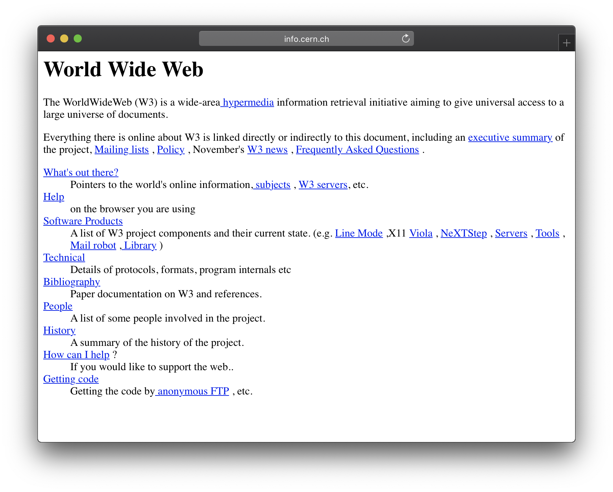
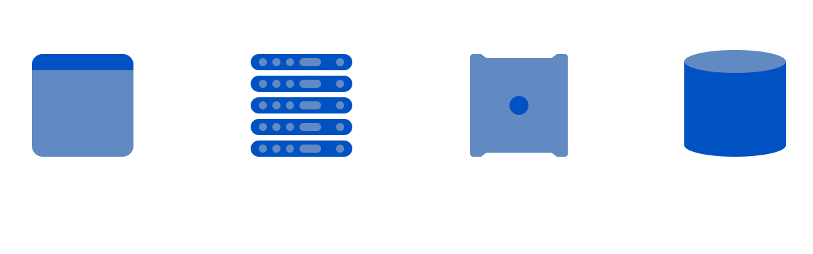
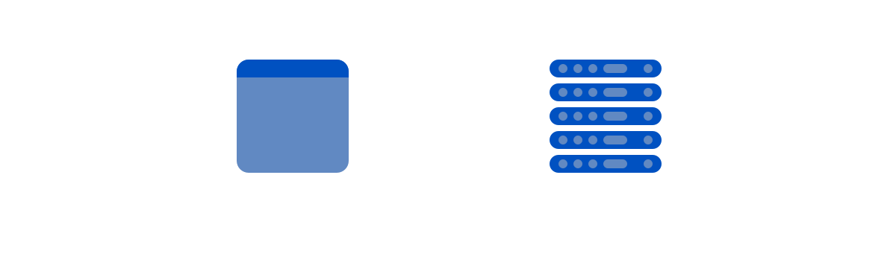

The Rise of the JAMstack (DJ set)
This is a transcript of a talk originally presented at Algolia Search Party Meetup in Paris, 2017.
The name of this talk is “The Rise of the JAMstack (DJ set)”, and why is it a DJ set, is because the original “Rise of the JAMstack” talk is by Mathias Biilmann, he gave this talk last year at Smashing Conference in San Francisco, and I’m offering a different take of the talk, I’m presenting the Designer’s Journey — same topic, but from a different point of view.
My name is Rafael Conde, but people call me Rafa, you can call me Rafa too — I’m a designer at Netlify, and Netlify for those who don’t know, is a platform to build and host your websites (I’ll give you a demo later).
The web is changing. It always is, it changes very fast — what I learned about web development back in college looks very different nowadays, and there are three big trends going on today:
Git all the things
First, Git is an essential component of almost everyone’s workflow (no one even taught me Git back in college), I wonder how many of you reading this still manually transfers your files via FTP to a remote server, as the primary way of updating your websites? For most web developers now, most of it is all automated, with Git playing a crucial role.
Modern JavaScript (ES6)
With ES6, JavaScript has come a long way, and we are now building complex modern applications on the web.
API economy
Lastly, there is now a very rich API economy available to all of us, you don’t have to spend a lot of time and effort building the smaller building blocks of your website and/or web apps since there are now so many good and mature APIs that you can pull from and add to your sites — APIs like Algolia if you want search on your site, if you’re looking to add payments, there’s Stripe. Do you need comments on your blog? You can add Disqus. You get the point.
The old stack
The web started as a way of sharing scientific articles, between some nerds at CERN — that’s what it was built for, that was its purpose — a way to view documents.
CSS and JavaScript wasn’t a thing.
Earlier this year, I met Bert Bos, one of the fathers of CSS, and he was commenting on the fact that this language was written as a way to style a document, and now we are using it to build complex user interfaces for web applications. It’s a miracle that it still holds up honestly.
Actually, it’s a miracle that the web actually works nowadays, since its applications are so far ahead of what it was originally intended for.
So, back in the day the web as very simple: you had a browser, that pinged a server, that delivered a document to you.

But of course that wasn’t enough, so eventually we decided to add a program, that the server would ping, it would run and build your website, send it back to the server, which would send it back to the browser.

And then we needed more, so we added databases, which became an essential part of how websites ran.
Of course, all of this started to get real slow, so we just added caches everywhere.
And this, this is the current state of how most of the web works, and there’s at least three major problems with this approach:
1. Security
There are a lot of entry points for malware and hackers to get in, and websites get hacked all the time — at least 70% of WordPress sites are currently vulnerable to attacks, which is crazy when you think about it (because most of the internet is WordPress, right?!). Also, building super secure websites is pretty hard — at a certain point you would need dedicated people to focus just on that, make sure your website is secure.
2. Performance
Like I said before, this current approach is kinda slow, there are a lot of moving parts, and just like security, it’s a pretty hard thing to manage and keep under control — here’s a couple of other funny stats: 78% of people who use the web felt frustration because websites were slow. Speaking of random data points, here’s another: 4% of people who use the web literally threw their phones at some point because a website was slow.
3. Reliability
Like I said, and you can see the theme here: there’s a lot of moving parts, a lot of stuff happening. Something being reliable is very valuable and important to people, at some point WordPress.com was offering for $75 000 to build a scalable model.
You don’t want to build your website, get linked on HackerNews and your website go down — that’s the worst possible moment for your website to go down, but a pretty common one.
It’s also very expensive to build a fast and reliable website using this old stack, and, on a personal note, I can’t do it. As a designer and frontend developer, I don’t know how to setup a server, write my own backend code, build a scalable and secure stack, manage a database — I have just no clue.
The new stack
We at Netlify started looking at a different way of doing this, of building websites, and by how popular static site generators are getting, it seems that a lot of web developers around the world are too.
Ideally, we would have our website, built as a static version, on a global CDN, and just like in the old days, the browser would ask for a site, and the server would deliver it.
And if you need a bit more functionality, you would just plug in a bunch of those APIs we just talked about.
An important part of this, and what makes this stack possible, is that we are decoupling the building and the hosting, decoupling frontend and the backend — which means that we wouldn’t have to build a whole new website someone pings the server, the website is built, it’s there, it’s static.
Developer workflow
If something is a pain in the ass to work with, even if it’s the most performant or secure, a lot of developers will stay away from it if they can. Luckily, with this JAMstack approach the developer workflow is a joy to use, and makes building these websites actually exciting and fun (fun is subjective here, I personally have a lot of fun).
We call this workflow, a Git-centric workflow.
Your code lives in a git repository, gets built by an external provider, and it’s distributed to a global CDN ready to be delivered to the client.
And these are the basic principals behind the JAMstack, which by the way, stands for JavaScript, APIs, and Markup.
“Static sounds fun, but I can’t do that”
One of the most common things I hear from people regarding the JAMstack is something along the lines of “Static sites sound fun and all, but I can’t do that for my site, I need a server”. Now, I’m not saying that they are wrong, I just challenge them to ask themselves, “but can’t I? Do I really need a server?”.
A good example of this is Smashing Magazine.
Smashing Magazine is one the most popular websites for front end web developers, and their website was built like this:
- They have a magazine, built on WordPress.
- An online store, built on Shopify.
- They had their own Job Board site, which was a Rails app.
- And their conference site, built as a Kirby app.
And on top of this, they were planning to add memberships to all of these.
In 2016, Mathias Biilmann decided to go on a little experiment, and scrapped the existing Smashing Magazine’s WordPress site, push it to Netlify and deliver it as a static version. Turns out, it was up to 10 times faster.
So Vitaly from Smashing asked if this was something they could do — and Matt said sure!
We actually couldn’t at the time, with what we had — so we built several open source APIs to make all of this possible:
You can check all of them out netlify.com/open-source.
And turns out we made it possible, right now, smashingmagazine.com is served as a static website.
The problem is the word “static”
I have a feeling that the problem is the actual word, static. Static sounds boring, doesn’t sound capable nor powerful — it doesn’t sound secure and fast at all.
How about that sweet workflow you mentioned?
This is the most fun part of this all, and here’s a demo of how fun and powerful it can be to work as a modern web developer: